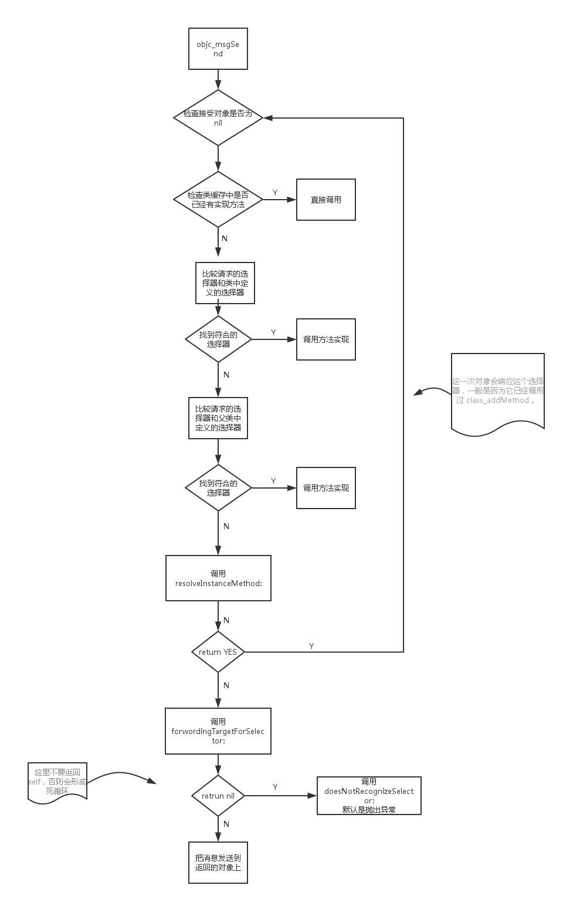

先看一下流程图：

在 Object-C 中调用方法最终都会翻译成调用方法实现的的函数指针，并传递给它一个对象指针、一个选择器和一组函数参数。
objc_msgSend 的工作方式如下：
- 检查接受对象是否为 nil 。如果是，调用 nil 处理程序。
- 在垃圾收集环境中（ios 不支持，写在这里是为了内容的完整性），检查有没有锻炼选择器（retain、release、autorelease、retainCount），如果有，返回 self。是的，这意味着在垃圾收集环境中 retainCount 会返回 self，不过你应该用不到。
- 检查类缓存中是不是已经有方法实现了，有的话，直接调用。
- 比较请求的选择器和类定义的选择器，如果找到了，调用方法实现。
- 比较请求的选择器和父类中定义的选择器，然后是父类的父类，以此类推。如果找到选择器，调用方法实现。
- 调用 resolveInstanceMethod: ( 或者 resolveClassMethod: )。如果它返回 YES ，那么重新开始。这一次对象会相应这个选择器，一般是因为它已经调用过 class_addMethod。
- 调用 forwardingTargetForSelector:，如果返回非 nil，那就把消息发送到返回的对象上。这里不要返回 self，否则会形成死循环。
- 调用 methodSignatureForSelector:，如果返回一个非 nil，创建一个 NSInvocation 并传给 forwardInvocation。
- 调用 doesNotRecognizeSelector:，默认是抛出异常。